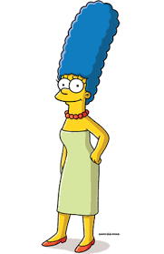

Marge
Marjorie "Marge" Jaqueline Bouvier-Simpson é a esposa de Homer Simpson e mãe de Lisa, Bart e Maggie Simpson no desenho animado Os Simpsons. Ela é mais conhecida por causa de seus longos cabelos azuis e de sua personalidade muito paciente.Já namorou com Artie Ziff. Mesmo Homer aprontando inúmeras confusões, ela continua sendo uma esposa fiel e dedicada, assim como é para com os filhos.
Personalidade
No episódio "Uma vida turbulenta" da primeira temporada, a idade de Marge é dita como 34 anos. Muitos episódios depois, entretanto, é dito que Marge tem 38 anos, possivelmente como reflexo de ela e Homer terem ido ao vigésimo aniversário da reunião do Ginásio. Na temporada 17, no episódio Resgatando Maggie
Já foi viciada em caçaníqueis e já foi presa injustamente. Em um episódio se tornou alcoólatra ao tentar acompanhar as bebedeiras do marido. Em outro já abriu uma academia, foi policial em Sprinfield e também já foi professora substituta da sala de Bart. Depois de inúmeras encrencas e vexames, conseguiu se recuperar. Marge possui duas irmãs, gêmeas entre si, a lésbica Patty Bouvier que já se envolveu com o Diretor Skinner, e Selma Bouvier, que se envolveu com vários homens de Springfield, no qual se destacam Sideshow Bob, Troy McClure e até o Vovô Simpson.